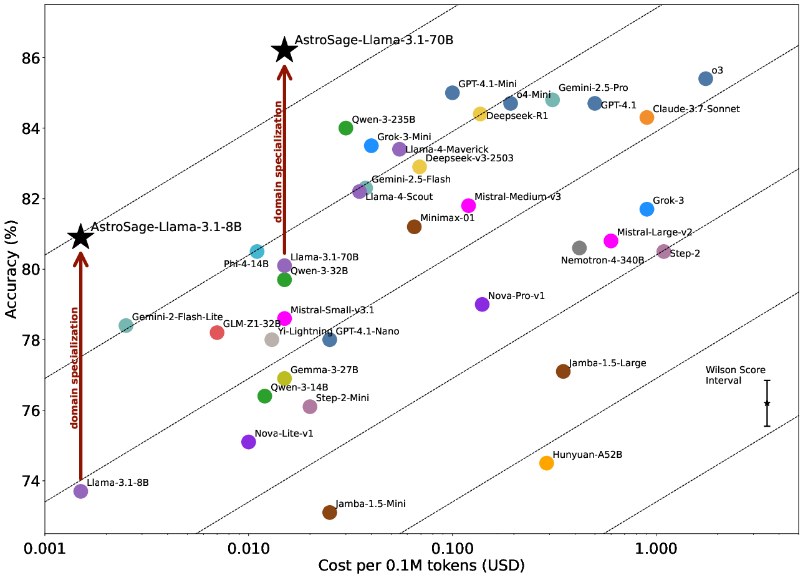

Our benchmarking dataset is available for download on Hugging Face.
Exploring astronomy LLMs provides an unprecedented opportunity to quantify capabilities that were previously difficult to assess. The progress of astronomy requires a myriad of logical skills. These skills often combine elements of factual retrieval, competitive mathematics derivation, and common sense AI, making it challenging to assess LLM performance in this domain.
Until recently, there was a void in question and answering datasets specifically tailored to scientific reasoning in astronomy. To address this gap, we have focused on establishing the standard for astronomical Q&A in this non-trivial and largely unexplored field.
In collaboration with Argonne National Laboratory, we have developed a comprehensive astronomical benchmarking dataset, designed to evaluate LLM performance in astronomical research contexts. This dataset comprises both Q&A and Multiple Choice Question (MCQ) components. Key features include:
This dataset is designed to:
Here are some examples from our dataset:
These examples demonstrate the depth and breadth of astronomical knowledge covered in our benchmarking dataset.
Our benchmarking results reveal significant variations in performance across different proprietary large language models when tested on astronomy-specific questions. For a comprehensive analysis and detailed discussion of these results, please refer to Ting et al. (2024).
| Model | Score (%) |
|---|---|
| AstroMLab/AstroSage Series |   |
| AstroSage-8B (AstroMLab, de Haan et al., 2024) | 80.9 ▲ ▲ ▲ ü•à |
| Meta/LLaMA Series |   |
| LLaMA-2-7B | 50.3 |
| AstroLLaMA-2-7B (UniverseTBD, Perkowski et al., 2024) | 44.3 üîª |
| LLaMA-2-70B | 70.7 |
| AstroLLaMA-2-70B (AstroMLab, Pan et al., 2024) | 72.3 ▲ |
| LLaMA-3-8B | 72.9 |
| LLaMA-3-70B | 80.4 |
| LLaMA-3.1-8B | 73.7 |
| LLaMA-3.1-70B | 80.1 |
| LLaMA-3.1-405B | 83.8 ü•á |
| LLaMA-3.2-11B | 74.9 |
| LLaMA-3.2-90B | 80.6 ü•â |
| Mistral AI Series |   |
| Mistral-7B-v0.1 | 48.1 |
| Mistral-8x7B-v0.1 | 73.7 |
| Mixtral-8x22B-v0.1 | 77.7 |
| Mistral-7B-v0.2 | 62.1 |
| Mistral-7B-v0.3 | 63.9 |
| Mistral-12B-Nemo | 71.6 |
| Microsoft/Phi Series |   |
| Phi-2-3B | 65.6 |
| Phi-3-4B | 71.7 |
| Phi-3-14B | 75.6 |
| Phi-3.5-4B | 72.8 |
| Google/Gemma Series |   |
| Gemma-2-2B | 58.5 |
| Gemma-2-9B | 71.5 |
| Gemma-2-27B | 75.3 |
| Alibaba/Qwen(通义千问) Series |   |
| Qwen-2.5-7B | 70.4 |
| Qwen-2.5-72B | 78.6 |
| Nvidia/Nemotron Series |   |
| Nemotron-340B | 80.6 ü•â |
| 01/Yi(零一万物) Series |   |
| Yi-1.5-6B | 61.0 |
| Yi-1.5-9B | 68.4 |
| Yi-1.5-34B | 73.1 |
| Deepseek(深度求索) Series |   |
| Deepseek-67B | 63.1 |
| Zhipu(智谱)/ChatGLM Series |   |
| ChatGLM3-6B | 50.4 |
| GLM-4-9B | 67.0 |
| PJ Lab(浦语)/InternLM(书生) Series |   |
| InternLM-2.5-7B | 64.5 |
| InternLM-2.5-20B | 66.7 |
| Model | Score (%) |
|---|---|
| OpenAI/GPT Series |   |
| O1-Mini | 80.1 |
| O1-Preview | 81.6 ü•â |
| GPT-3.5 | 70.4 |
| GPT-4 | 74.5 |
| GPT-4o-Mini | 76.1 |
| GPT-4o | 80.4 |
| Anthropic/Claude Series |   |
| Claude-2.0 | 75.3 |
| Claude-3.0-Haiku | 77.9 |
| Claude-3.0-Sonnet | 76.7 |
| Claude-3.0-Opus | 82.7 ü•à |
| Claude-3.5-Sonnet | 85.0 ü•á |
| Google/Gemini Series |   |
| Gemini-1.0-Pro-001 | 71.0 |
| Gemini-1.5-Flash-001 | 73.6 |
| Gemini-1.5-Pro-001 | 77.6 |
| Gemini-1.5-Flash-002 | 76.5 |
| Gemini-1.5-Pro-002 | 78.2 |
| Mistral AI Series |   |
| Mistral-Large-1 | 76.4 |
| Mistral-Large-2 | 80.8 |
| xAI Series |   |
| Grok-Beta | 79.5 |
| Zhipu(智谱)/GLM Series |   |
| GLM-3-Turbo | 64.3 |
| GLM-4-Flash | 67.1 |
| GLM-4-Air | 72.9 |
| GLM-4-AirX | 72.5 |
| GLM-4-0520 | 75.1 |
| GLM-4-Plus | 77.9 |
| Baidu/ERNIE(文心一言) Series |   |
| ERNIE-3.5 | 72.1 |
| ERNIE-4.0 | 75.1 |
| Deepseek(深度求索) Series |   |
| Deepseek-v2 | 73.6 |
| Deepseek-v2.5 | 73.9 |
| Step(阶跃星辰) Series |   |
| Step-1 | 75.2 |
| Step-2 | 80.5 |
| ByteDance/Doubao(豆包) Series |   |
| Doubao-Lite | 60.5 |
| Doubao-Pro | 70.1 |
| MiniMax AI Series |   |
| ABAB-5.5 | 69.5 |
| ABAB-6.5 | 72.7 |
| 01/Yi(零一万物) Series |   |
| Yi-Medium | 70.3 |
| Yi-Large | 77.3 |
| Yi-Lightning | 78.0 |
| Moonshot(月之暗面)/Kimi Series |   |
| Moonshot-v1 | 72.3 |
| Perplexity Series |   |
| Perplexity-Llama-3.1-Sonar-Small | 72.0 |
| Perplexity-Llama-3.1-Sonar-Large | 76.7 |
Cost efficiency is crucial when deploying LLMs as research agents in astronomy. The figure below illustrates the cost-performance relationship across various models.

Figure: Our flagship model, AstroSage-LLaMA-3.1-8B, demonstrates exceptional performance in astronomical knowledge recall, achieving 80.9% accuracy on the AstroMLab-1 benchmark. This performance is comparable to OpenAI’s latest GPT-4o model and represents a substantial 8-point improvement over its base LLaMA-3.1-8B model.